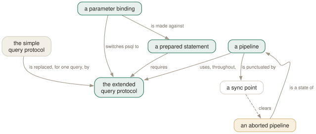

Day 16
The extended protocol
psql speaks the simple protocol; your application does not. Seven commands let you speak the other one by hand.
By the end of today you can
- run a query through the extended protocol with real bound parameters, from a prompt
- queue several statements without waiting for each result, and collect them
- recognise the pipeline's version of an aborted transaction
psql is the odd client out
Everything you have typed so far went to the server over the simple query protocol: one string, containing its own constants, parsed and planned and executed as a unit. Almost nothing else talks to PostgreSQL that way. Your application's driver uses the extended protocol — parse a statement with placeholders, bind values to them, execute — and that difference is visible in the plans you get.
Which makes this the day that resolves “it is fast in psql”. When the planner sees WHERE created > '2026-01-01' it can use the value; when it sees WHERE created > $1 at parse time it may not. \bind lets you ask the same question the application asks:
testdb=# SELECT $1::int + $2::int AS sum \bind 2 3 \g
sum
-----
5
(1 row)
Read that line carefully, because the shape is unusual. The SQL goes in the buffer as normal, then \bind with its parameters, then a dispatcher. It works with \g, \gx and \gset — but not with a bare semicolon, because the semicolon would have dispatched the buffer before \bind was reached.

EXPLAIN under \bind is comparable with production and EXPLAIN at a bare prompt sometimes is not. The amber box is the pipeline's version of a failed transaction block: everything queued after an error is refused until a sync point or \endpipeline.Naming a statement
The three-step version separates parsing from execution, which is what a driver actually does when it reuses a statement:
testdb=# SELECT $1::text AS greeting \parse stmt1
testdb=# \bind_named stmt1 'hello' \g
greeting
----------
hello
(1 row)
testdb=# \bind_named stmt1 'again' \g
testdb=# \close_prepared stmt1
\parse issues a Parse message and nothing else — the statement exists on the server and has not run. \bind_named is \bind with a statement name in front, and an empty string names the unnamed prepared statement, which is the one an ordinary \bind uses. \close_prepared tidies up, and is a no-op if the name does not exist.
This is not the same as SQL's PREPARE and EXECUTE, which live at the SQL level and are visible to the simple protocol. These four commands operate at the protocol level, which is the point: they are for finding out what the wire does, not for writing application logic in psql.
Not waiting for the answer
Normally psql sends a statement, waits for the result, and only then reads your next line. Over a link with 20 ms of latency, a hundred small statements spend two seconds doing nothing at all. A pipeline sends them back to back and collects the results afterwards:
testdb=# \startpipeline
testdb=# SELECT 1;
testdb=# SELECT 2 \bind \sendpipeline
testdb=# \flushrequest
testdb=# \getresults
?column?
----------
1
(1 row)
?column?
----------
2
(1 row)
testdb=# \endpipeline
The vocabulary is small and each piece answers one question:
\startpipeline/\endpipeline- the boundaries. Everything inside uses the extended protocol, whether or not you asked.
- a trailing
; - appends the statement to the pipeline. This is the ordinary way to queue something.
\sendpipeline- appends the current buffer explicitly — needed after a
\bind, because\gis refused inside a pipeline (\g not allowed in pipeline mode). \flushrequest- asks the server to send what it has, so you can read results without ending the pipeline.
\flush- pushes psql's own unsent bytes at the server. Rarely needed;
\getresultsdoes it for you. \getresults [n]- reads pending results — the first
n, or all of them. \syncpipeline- sends a sync without ending the pipeline. Also the error boundary, which is the next section.
Three variables let you see the state you are in: PIPELINE_COMMAND_COUNT (queued, not yet forced), PIPELINE_RESULT_COUNT (asked for, not yet read) and PIPELINE_SYNC_COUNT. And %P in the prompt reports off, on or abort — the one prompt escape from yesterday that is worth adding temporarily rather than permanently.
The pipeline's failed transaction
An error inside a pipeline behaves almost exactly like an error inside a transaction block, and recognising the pattern is most of what you need:
[P=off] =# \startpipeline
[P=on] =# SELECT nosuch;
[P=on] =# \flushrequest
[P=on] =# \getresults
ERROR: column "nosuch" does not exist
LINE 1: SELECT nosuch;
^
[P=abort] =# SELECT 1;
[P=abort] =# \flushrequest
[P=abort] =# \getresults
Pipeline aborted, command did not run
[P=abort] =# \endpipeline
[P=off] =#
Everything queued after the failure is refused, and psql goes on accepting your input and doing nothing with it — the same shape as “current transaction is aborted, commands ignored”, and the same reason to have the state in your prompt.
The way out is a sync point, which is what \syncpipeline sends and what \endpipeline ends with. A sync is the extended protocol's error-recovery boundary: the server discards the failed work and becomes ready again. Which is why the same failing statement followed by \syncpipeline rather than \flushrequest never reaches the aborted state at all — the sync cleared it before you looked.
What this is actually for
Three honest uses, and it is worth being clear that day-to-day psql needs none of them:
- Reproducing your application's plans.
EXPLAIN (ANALYZE) SELECT ... WHERE x = $1 \bind 'v' \gis the same shape of request your driver makes, so the plan is comparable. This is the one that will earn its keep. - Testing protocol-level behaviour. Whether a statement can be prepared at all, what the server says about a bad bind, how a driver's reuse of the unnamed statement interacts with your DDL.
- Measuring the cost of round trips. Time a hundred statements normally and then inside a pipeline, over the link you actually deploy across. It is the honest way to find out whether batching in your application would help.
Nothing here goes in your psqlrc. Unlike every other day since Day 6, this one adds no configuration — these are commands you reach for on a particular afternoon and then forget until the next one.
Today's habit
Just the first one: the next time somebody says a query is fast in psql and slow in the application, run it once with \bind before discussing anything else. It takes ten seconds and it settles the question roughly half the time.
Tomorrow: the sharp edges, and what to read next.
New vocabulary
Commands
| Command | Does |
|---|---|
\bind [param ...] | Bind parameters for the next execution, and switch it to the extended protocol. |
\bind_named name [param ...] | The same, against a statement already prepared by \parse. |
\parse name | Prepare the buffer under a name. An empty string means the unnamed statement. |
\close_prepared name | Close a prepared statement. A no-op if there is no such statement. |
\startpipeline \endpipeline | Open and close a pipeline. Everything inside uses the extended protocol. |
\sendpipeline | Append the current buffer to the pipeline. \g is refused inside one. |
\syncpipeline | Send a sync without ending the pipeline. Also the error-recovery point. |
\flushrequest \flush \getresults | Ask the server for results, push unsent bytes, read results back. |
Options
| Option | Does |
|---|---|
PIPELINE_COMMAND_COUNT | Commands queued in the current pipeline but not yet forced. |
PIPELINE_RESULT_COUNT | Results the server has been asked for and you have not read. |
PIPELINE_SYNC_COUNT | Syncs queued in the current pipeline. |
Drillsdo these in a real terminal, today
Self-check
Answer out loud first, then unfold.
Your application reports a query plan quite different from the one you get in psql, with the same SQL and the same data. Before blaming the planner, what difference is there between the two clients?
The protocol. psql uses the simple query protocol — one string, parsed and planned and executed together, with the constants right there in the text. Almost every driver uses the extended protocol, where the statement is parsed with placeholders and the parameter values arrive separately, so the planner may be working without knowing the value it is filtering on.
Which is exactly what \bind lets you reproduce: SELECT ... WHERE x = $1 \bind 'thevalue' \g goes over the extended protocol with a real bound parameter, so EXPLAIN under \bind is comparable with what your application gets. It is the shortest route out of “it is fast in psql” arguments.
How long does \bind last, and what happens if you forget?
One execution. The manual page is explicit: “this command affects only the next query executed; all subsequent queries will use the simple query protocol by default.” The same applies to \parse and \close_prepared.
So there is no mode to forget you are in — which is the right design for a diagnostic tool, and it also means a benchmark loop has to repeat the \bind every time. Note that \bind with zero parameters still switches protocol, which is how you test the extended path for a query that has no placeholders at all.
Inside a pipeline you run a failing statement, \flushrequest, \getresults. Now nothing works. What state are you in and how do you get out?
An aborted pipeline — %P shows abort — and every command you queue from now on answers “Pipeline aborted, command did not run”. It is the pipeline's exact analogue of Day 8's failed transaction block, including the part where it keeps accepting your input and doing nothing with it.
Two ways out: \endpipeline, which returns %P to off, or a \syncpipeline, because a sync is the error-recovery boundary in the extended protocol. Which is also why the same failing statement followed by \syncpipeline rather than \flushrequest never aborts in the first place.
Why is a pipeline faster than the same statements sent one at a time, and why is it not simply the default?
Because it removes the round trips. Normally psql sends a statement and waits for its result before sending the next, so a hundred statements over a link with 20 ms latency costs two seconds in waiting alone. In a pipeline the statements go out back to back and the results are collected afterwards.
It is not the default because it changes what failure means. Without a result in hand you cannot decide what to send next, error recovery becomes a matter of sync points rather than statements, and COPY does not work at all — psql answers “COPY in a pipeline is not supported, aborting connection”, which is rather more than a failed command. Interactive work wants the round trip; bulk work by a driver does not.
Cheat sheet
psql speaks the simple protocol. Your application does not.
SELECT $1::int + $2::int \bind 2 3 \g -- extended protocol, real bound params
works with \g \gx \gset — NOT with a bare ; (that dispatches before \bind is read)
affects the NEXT execution only. \bind with zero params still switches protocol.
SELECT $1::text \parse s1 \bind_named s1 'v' \g \close_prepared s1
'' names the unnamed statement — the one a plain \bind uses
EXPLAIN (ANALYZE) SELECT ... WHERE x = $1 \bind 'v' \g <- the plan production gets
-- pipelining: send without waiting
\startpipeline ... \endpipeline ; queues a statement \sendpipeline queues the buffer
\flushrequest then \getresults [n] \syncpipeline = sync + error boundary
:PIPELINE_COMMAND_COUNT :PIPELINE_RESULT_COUNT :PIPELINE_SYNC_COUNT prompt: %P
after an error: %P = abort, everything refused until a sync or \endpipeline
COPY in a pipeline ABORTS THE CONNECTION, not just the command
Everything through Day 16
Keys
| Key | Does |
|---|---|
| C-c | Abandon the line you are typing and empty the query buffer. |
| C-d | End the session — but only when the buffer is empty. |
| Tab | Complete a keyword or an object name. Twice for a menu, depending on the library. |
| UpC-p | The previous line from the history. |
| C-r | Reverse incremental search through the history. The one worth learning today. |
Commands
| Command | Does |
|---|---|
psql | Connect with the defaults and start an interactive session. |
; | Dispatch the buffer. Not a meta-command — SQL's own statement terminator. |
\g | Dispatch the buffer, exactly as a semicolon does. |
\p | Print the buffer without sending it. \print in full. |
\r | Reset: throw the buffer away. \reset in full. |
\e | Edit the buffer in $EDITOR; on exit it is re-parsed and run. |
\w file | Write the buffer to a file instead of sending it. |
\; | Append a semicolon to the buffer without dispatching it. |
\? | Every meta-command, in twelve groups. 121 of them in 18.6. |
\h SELECT | Syntax for one SQL command. \h alone lists what it knows. |
\q | Quit. |
\c dbname | Reconnect to another database, reusing host, port and user. |
\c - user | Reconnect as another user. A dash means “leave that one as it is”. |
\c -reuse-previous=on ... | Merge a conninfo string onto the current parameters. |
\conninfo | A twelve-row table describing the live connection. |
\password | Change a password without it reaching your history or the server log. |
\encoding | Show the client encoding, or set it. |
\d | Bare: tables, views, materialized views, sequences and foreign tables. |
\d my_table | Describe one relation: columns, types, nullability, defaults, indexes, constraints. |
\d+ my_table | Adds storage, compression, stats target and per-column comments. |
\dt | Tables. The letters combine — \dti lists tables and indexes. |
\di \dv \dm \ds \dE | Indexes, views, materialized views, sequences, foreign tables. |
\dn | Schemas. \dn+ adds permissions and comments. |
\l | Databases, with owner, encoding, locale provider and privileges. |
\dP | Partitioned tables and indexes; add n to include non-root ones. |
\dx | Installed extensions; \dx+ lists everything each one owns. |
\df pattern | Functions, with result type, argument types and kind. |
\df pattern t1 t2 | Extra arguments are type patterns, matched positionally. |
\sf name | The function's source as CREATE OR REPLACE. \sf+ numbers the body. |
\sv name | The same for a view. \ev and \ef edit rather than show. |
\du | Roles and their attributes. \dg is the same command. |
\drg | Role grants: who is a member of what, with ADMIN/INHERIT/SET. |
\dp | Access privileges on tables, views and sequences. \z is the same command. |
\ddp | Default privileges — what future objects will be created with. |
\dconfig | Server parameters set to non-default values. \dconfig * for all of them. |
\drds | Settings attached to a role, a database, or the pair. |
\dT \do \da | Types, operators and aggregates — same grammar, rarer questions. |
\pset | With no argument, print all 22 printing options and their current values. |
\x | Toggle expanded mode. \x auto is the setting worth keeping. |
\a \t \f \C \H | Shortcuts kept for compatibility: format, tuples_only, fieldsep, title, HTML. |
\set | With no argument, list every variable currently set, with its value. |
\set NAME value | Set a psql variable. Several values are concatenated. |
\unset NAME | Delete it — or, for a control variable, restore its default. |
\echo :NAME | Read a variable back. The cheapest debugging tool psql has. |
\i ~/.psqlrc | Re-read the startup file without restarting. Tilde expansion works. |
\e | Edit the buffer — or a file, or the last query — optionally at a line number. |
\ef name | Fetch a function's definition into your editor. \ev for a view. |
\s file | Print the command history, or write it to a file. |
\errverbose | Repeat the last error at maximum verbosity, changing no settings. |
\timing on | Report how long each statement took. Milliseconds, then m:ss past a second. |
\copy tbl FROM 'file' | Client-side load. psql reads the file, as you, with no server privileges. |
\copy (query) TO 'file' | Client-side export. A table name, or a query in parentheses. |
\copy tbl FROM PROGRAM 'cmd' | Run a command on the client and load its output. TO PROGRAM pipes out. |
\copy tbl FROM stdin | Data rows follow, up to a line containing only \.. |
\copy ... TO pstdout | psql's real stdout, ignoring \o. pstdin is the input twin. |
\copy ... FROM 'f' WHERE cond | Filter rows as they load — the condition is evaluated server-side. |
COPY ... TO STDOUT then \g f | The multi-line, interpolating alternative to \copy. |
\o file | Point all future query output at a file. Bare \o restores stdout. |
\o |command | Pipe all future query output to a shell command. |
\g file | This one query's output to a file. \g |cmd pipes it instead. |
\g (opt=val ...) | A one-shot \pset for this query only. |
\qecho text | Write to the query-output channel, so it lands in the same file. |
\warn text | Write to standard error, so it never lands in the file. |
\w file | Write the query buffer — not its output — to a file. |
\lo_import file | Store a file as a large object. Also \lo_export, \lo_list, \lo_unlink. |
\i file | Read and execute a file. The path is relative to the current directory. |
\ir file | The same, resolved relative to the directory of the including script. |
\! command | Run a shell command. With no argument, a sub-shell until you exit it. |
:name | Substitute the value literally — unquoted, unchecked, unsafe. |
:'name' | Substitute as a properly quoted SQL literal. Handles embedded quotes. |
:"name" | Substitute as a properly quoted SQL identifier. Handles spaces and case. |
:{?name} | TRUE or FALSE depending on whether the variable exists. |
`command` | Substitute a shell command's output, trailing newline removed. |
\gset [prefix] | Store a one-row result into variables named after its columns. |
\getenv var ENVVAR | Read an environment variable into a psql variable. |
\setenv NAME value | Set an environment variable for psql and anything it runs. |
\prompt [text] name | Ask the operator for a value and store it. |
\gexec | Run the buffer, then execute every cell of the result as SQL. |
\gdesc | Report the result's column names and types without running it. |
\crosstabview colV colH colD | Pivot the result into a grid. Two columns become the axes. |
\watch i=N c=N m=N | Re-run the buffer every N seconds, at most N times, while it returns N rows. |
\if expression | Open a block. The expression is interpolated, then read as a Boolean. |
\elif expression | Another arm. Not evaluated at all once an earlier arm has matched. |
\else | At most one, and last before the \endif. |
\endif | Close the block. Must be in the same source file as its \if. |
\bind [param ...] | Bind parameters for the next execution, and switch it to the extended protocol. |
\bind_named name [param ...] | The same, against a statement already prepared by \parse. |
\parse name | Prepare the buffer under a name. An empty string means the unnamed statement. |
\close_prepared name | Close a prepared statement. A no-op if there is no such statement. |
\startpipeline \endpipeline | Open and close a pipeline. Everything inside uses the extended protocol. |
\sendpipeline | Append the current buffer to the pipeline. \g is refused inside one. |
\syncpipeline | Send a sync without ending the pipeline. Also the error-recovery point. |
\flushrequest \flush \getresults | Ask the server for results, push unsent bytes, read results back. |
Options
| Option | Does |
|---|---|
-h -p -U -d | Host, port, user, database. -d also takes a whole conninfo string. |
-w -W | Never prompt for a password / always prompt. Both persist across \c. |
-l | List databases and exit. Connects to postgres unless told otherwise. |
PGHOST PGPORT PGUSER PGDATABASE | libpq's defaults for the four parameters. |
PGPASSFILE | The password file. Default ~/.pgpass, and it must be mode 0600. |
PGSERVICEFILE | Named connection recipes. Default ~/.pg_service.conf. |
S | Include system objects: \dtS. Supplying any pattern does this too. |
+ | More columns — and a size lookup per relation, so it is not free. |
x | Expanded output for this listing only. Goes after S or +, never straight after \d. |
a n p t w | Function-kind filters for \df: aggregate, normal, procedure, trigger, window. |
format | aligned (default), wrapped, unaligned, csv, html, asciidoc, latex, troff-ms. |
expanded | on / off (default) / auto — vertical records, always or only when too wide. |
null | What to print for NULL. Default is nothing, which reads exactly like an empty string. |
border | 0 none, 1 dividing lines (default), 2 a full frame. |
linestyle | ascii (default) or unicode. Aligned and wrapped only. |
footer | The (n rows) line. off removes it. |
columns | Target width for wrapped, and the threshold for expanded auto. 0 means use $COLUMNS. |
pager | off / on (default, meaning “only when it does not fit”) / always. |
xheader_width | full (default) / column / page / an integer — how long the record rule may be. |
-X | Skip both startup files. Every script should pass this. |
PSQLRC | Where the personal startup file lives. Overrides ~/.psqlrc. |
PGSYSCONFDIR | Where the system-wide psqlrc is looked for. |
QUIET | Suppress psql's informational chatter. The startup file's bookends. |
VERSION_NAME SERVER_VERSION_NUM | psql's version and the server's, as a string and a number. |
HISTFILE | Where history is kept. Default ~/.psql_history. Must be set in psqlrc. |
HISTSIZE | How many commands to keep. Default 500; a negative value means no limit. |
HISTCONTROL | ignorespace / ignoredups / ignoreboth / none (default). |
COMP_KEYWORD_CASE | Casing for completed keywords. Default preserve-upper. |
PSQL_EDITOR EDITOR VISUAL | Checked in that order. vi if none of them is set. |
PSQL_EDITOR_LINENUMBER_ARG | How a line number is passed. Default +, which suits vi and emacs. |
AUTOCOMMIT | On by default: every statement commits itself unless you opened a block. |
ON_ERROR_ROLLBACK | off (default) / interactive / on — implicit per-statement savepoints. |
ON_ERROR_STOP | Stop at the first error instead of carrying on. Exit code 3 in a script. |
VERBOSITY | default / verbose / terse / sqlstate. |
SHOW_CONTEXT | never / errors (default) / always — the CONTEXT field. |
ERROR SQLSTATE ROW_COUNT | Set after every statement: did it fail, with what code, how many rows. |
LAST_ERROR_MESSAGE LAST_ERROR_SQLSTATE | The most recent failure, still there after later successes. |
-o file | Send all query output to a file, decided at start-up. |
-L file | Log each query and its output to a file, as well as to the normal destination. |
tuples_only | Data only — no header, no footer, no title. -t on the command line. |
fieldsep recordsep csv_fieldsep | Separators for unaligned and CSV output; -F, -R, -z, -0. |
-c command | Run one command and exit. Repeatable, and mixable with -f. |
-f file | Read commands from a file. Repeatable, and gives errors a file and line number. |
-X | Skip the startup files. Every script wants this. |
-q | No banner, no informational chatter. Same as QUIET. |
-v NAME=value | Set a variable from the command line. The value is not interpolated. |
-1 | Wrap everything the -c and -f options do in one transaction. |
ECHO | none (default) / queries (-e) / all (-a) / errors (-b). |
-s -S | Single-step: confirm each statement. Single-line: a newline terminates one. |
SHOW_ALL_RESULTS | Show every result of a \;-combined query, not just the last. Default on. |
SHELL_ERROR SHELL_EXIT_CODE | Whether the last shell command failed, and its exit status. |
WATCH_INTERVAL | Default seconds between \watch runs. Default 2; an explicit interval wins. |
PSQL_WATCH_PAGER | A pager for \watch only. Unset by default, because ordinary pagers cannot cope. |
PROMPT1 | The prompt for a new statement. Default '%/%R%x%# '. |
PROMPT2 | Shown while a statement is unfinished. Same default as PROMPT1. |
PROMPT3 | Shown during COPY ... FROM STDIN. Default '>> '. |
%R | = ready, - unterminated, ' open string, @ inactive branch, ^ single-line, ! disconnected. |
%x | Transaction: empty, * in a block, ! failed block, ? no connection. |
%# | # for a superuser, > for everyone else. |
%/ %~ | The database name; %~ prints ~ when it is your default database. |
%n %M %m %> | Session user; full host; host to the first dot; port. |
%[ ... %] | Wrap non-printing characters so readline can measure the prompt. |
%w | Whitespace as wide as the last PROMPT1 — an invisible second prompt. |
PIPELINE_COMMAND_COUNT | Commands queued in the current pipeline but not yet forced. |
PIPELINE_RESULT_COUNT | Results the server has been asked for and you have not read. |
PIPELINE_SYNC_COUNT | Syncs queued in the current pipeline. |